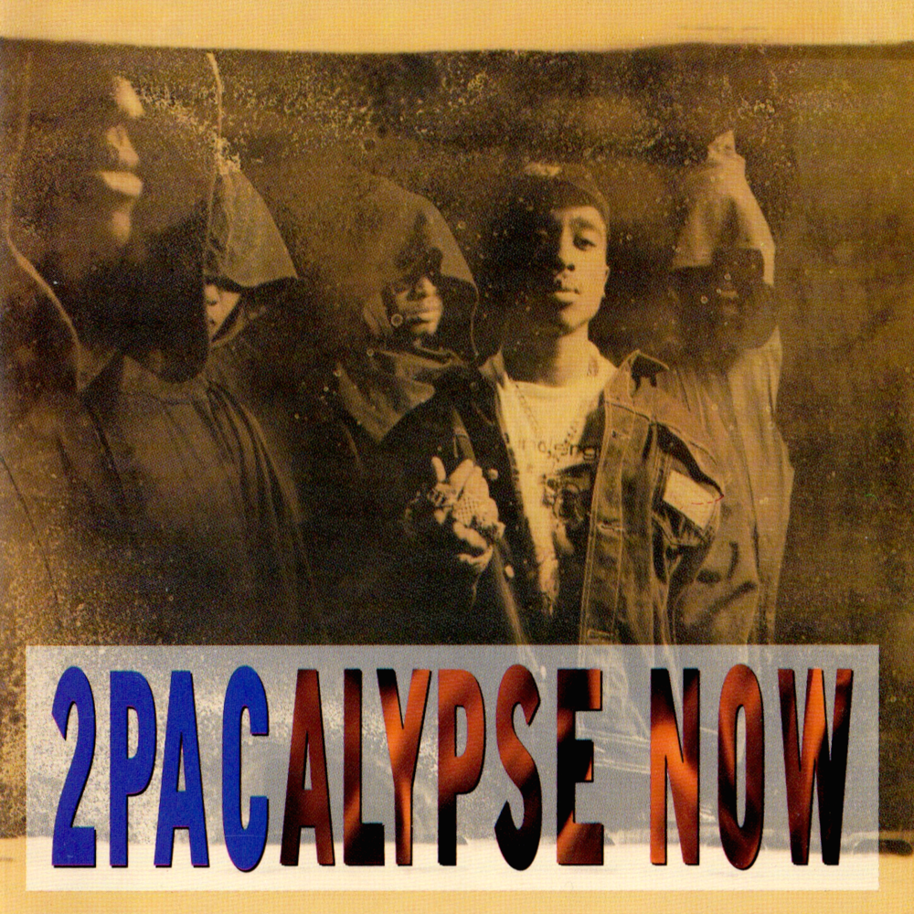
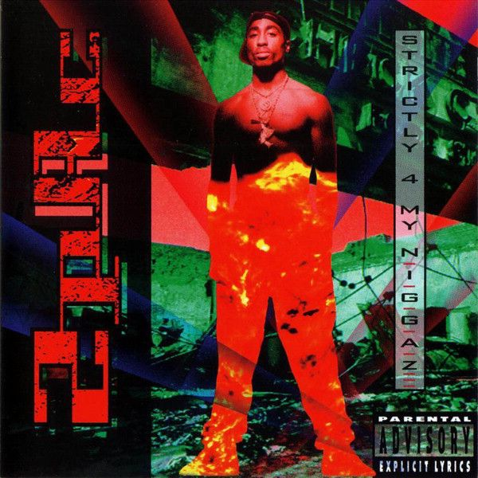
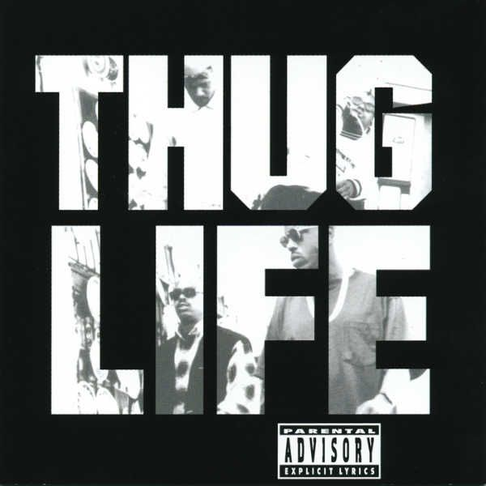
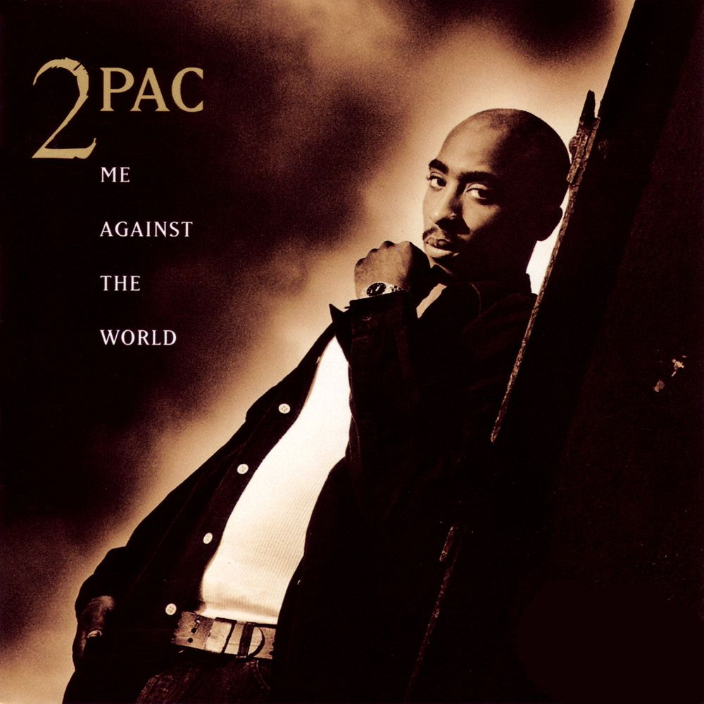
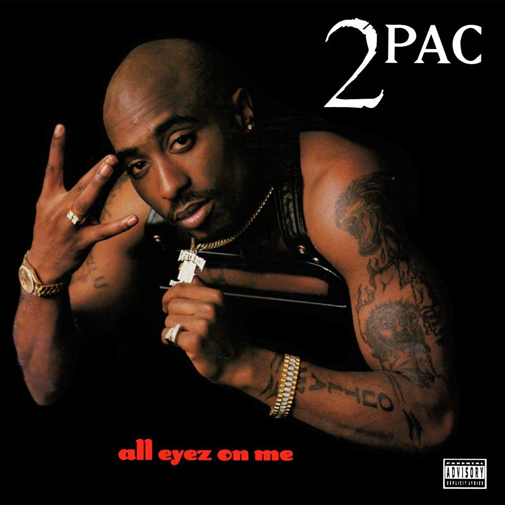
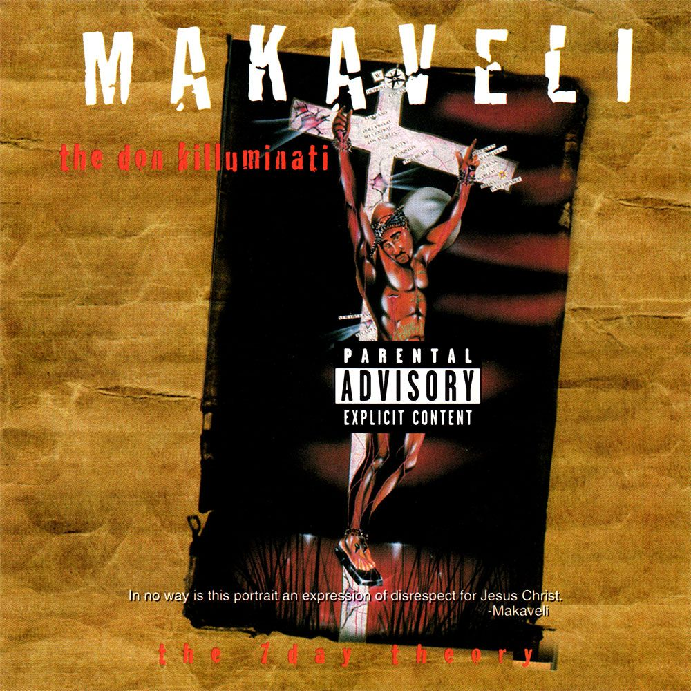

Living Legacy

2Pacalypse (1992)
- Young Black Male
- Trapped
- Soulja's Story
- I Don't Give a Fuck
- Violent
- Words of Wisdom
- Something Wicked
- Crooked Ass Nigga
- If My Homie Calls
- Brenda's Got a Baby
- Tha Lunatic
- Rebel of the Underground
- Part Time Mutha

Strictly 4 My N.I.G.G.A.Z... (1993)
- Holler if Ya Hear Me
- Pac's Theme (Interlude)
- Point the Finga
- Something 2 Die 4 (Interlude)
- Last Wordz
- Souljah's Revenge
- Peep Game
- Strugglin'
- Guess Who's Back
- Representin '93
- Keep Ya Head Up
- Strictly 4 My N.I.G.G.A.Z.
- The Streetz R Deathrow
- I Get Around
- Papa'z Song
- 5 Deadly Venomz

Thug Life: Volume One (1994)
- Bury Me a G
- Don't Get it Twisted
- Shit Don't Stop
- Pour Out a Little Liquor
- Stay True
- How Long Will They Mourn Me?
- Under Pressure
- Street Fame
- Cradle to the Grave
- Str8 Ballin'

Me Against the World (1995)
- Intro
- If I Die 2Nite
- Me Against the World
- So Many Tears
- Temptations
- Young Niggaz
- Heavy in the Game
- Lord Knows
- Dear Mama
- It Ain't Easy
- Can U Get Away
- Old School
- Fuck the World
- Death Around the Corner
- Outlaw

All Eyez On Me (1996) | Disc One
- Ambitionz Az a Ridah
- All Bout U
- Skandalouz
- Got My Mind Made Up
- How Do U Want It
- 2 of Amerikaz Most Wanted
- No More Pain
- Heartz of Men
- Life Goes On
- Only God Can Judge Me
- Tradin War Stories
- California Love (Remix)
- I Ain't Mad at Cha
- What'z Ya Phone #
All Eyez On Me (1996) | Disc Two
- Can't C Me
- Shorty Wanna Be a Thug
- Holla At Me
- Wonda Why They Call U Bitch
- When We Ride
- Thug Passion
- Picture Me Rollin'
- Check Out Time
- Ratha Be Ya Nigga
- All Eyez on Me
- Run Tha Streetz
- Ain't Hard 2 Find
- Heaven Ain't Hard 2 Find

Makaveli: The 7 Day Theory (1996)